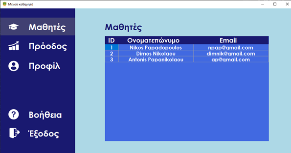

Online βοήθεια της εφαρμογής
Μενού καθηγητή
Μόλις ο καθηγητής συνδεθεί ή εγγραφεί στην εφαρμογή θα έχει πρόσβαση στο μενού της εφαρμογής.
Όπως γίνεται αντιληπτό και παραπάνω ο καθηγητής έχει πρόσβαση στα στοιχεία των μαθητών του, στην πρόοδο και τα στατιστικά στοιχεία που έχουν συγκεντρωθεί από τις ασκήσεις των μαθητών του. Ακόμα, δύναται να δει το προσωπικό του προφίλ, να δει την online βοήθεια και να αποσυνδεθεί.
Επιπλέον, μετά από κάθε ενέργεια του ο χρήστης θα επιστρέφει στο κεντρικό μενού, ώστε να επιλέξει την επόμενη του ενεργεία.